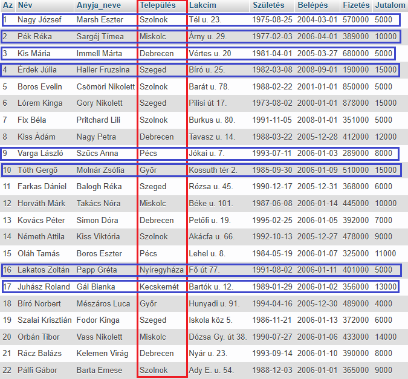
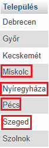
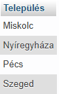
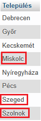
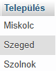
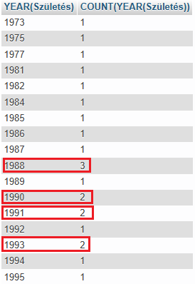
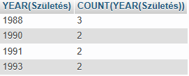

HAVING
A HAVING utasítást arra használjuk, hogy a GROUP BY utasítás által kapott eredményhalmazt az aggregáló (összesítő) függvényekkel szűrjük.
A WHERE záradékkal ellentétben, amely a csoportosítás előtt szűri az egyes sorokat (rekord), a HAVIG utasítás az aggregálás (összesítés) végrehajtása után szűri a csoportokat.
Példa:
SELECT Település
FROM dolgozók
GROUP BY Település
HAVING Település
BETWEEN "Miskolc"
AND "Szeged";



Látható, hogy az eredménytábla a kiválasztott mezőkből áll. Nincs közöttük ismétlődés!
Példa:
SELECT Település,
FROM dolgozók
GROUP BY Település
HAVING Település
LIKE "Sz%"
OR Település
LIKE "M%";


Látható, hogy az eredménytábla a kiválasztott mezőkből áll. Nincs közöttük ismétlődés!
Példa:
SELECT
YEAR(Születés), COUNT(YEAR(Születés))
FROM dolgozók
GROUP BY
YEAR(Születés)
HAVING
COUNT(YEAR(Születés))
> 1;



Látható, hogy az eredménytábla a kiválasztott mezőkből áll. Nincs közöttük ismétlődés!